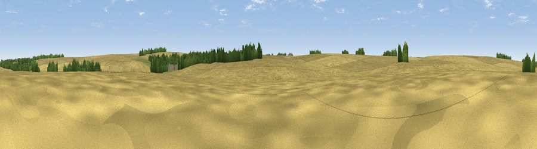

Viewpoint near Wold Newton
#46183 in England · top 99% of its area beats it · near Wold NewtonWhere it is
The exact computed spot (TF 23658 97323). Click the marker for map links.
The view, rendered

A 360° render of this exact spot computed from the terrain model, tree cover and land cover — summer colours, afternoon light, calibrated against photographs of famous viewpoints. Real trees, hedges and buildings will differ in detail.
The panorama
Grey silhouette: terrain skyline in each direction (720 bearings, Earth curvature and refraction included). Dashed green: skyline with trees (+15 m) and buildings (+8 m) as obstacles. Blue strip: how far the ground is visible on each bearing.
Where the view opens
Wedge length = distance to the farthest visible ground on that bearing (vegetation-aware). Rings at 10, 25 and 50 km.
What fills the view
90% cropland · 6% woodland · 4% grassland
Angular shares of the visible panorama (visual magnitude), not map area. Landscape diversity 0.17 (0–1 Shannon).
Key numbers
More beautiful places nearby
The staircase of upgrades: each row has a higher view potential than everything closer. Driving times are estimates from straight-line distance, calibrated against real road routing — check an actual route before setting out.
| Place | Direction | Drive | Score |
|---|---|---|---|
| Viewpoint near Thorganby | NW · 1 km | ~3 min | 30.2 |
| Viewpoint near Wold Newton | E · 2 km | ~5 min | 57.3 |
| Viewpoint near Walesby | WSW · 11 km | ~21 min | 57.9 |
| Viewpoint near Claxby | WSW · 12 km | ~22 min | 64.9 |
| Viewpoint near Claxby | W · 12 km | ~23 min | 71.5 |
| Garrowby Hill (A166 crest) | NW · 73 km | ~97 min | 71.9 |
| Viewpoint near Acklam | NNW · 77 km | ~101 min | 73.8 |
| Viewpoint near Speeton | N · 78 km | ~102 min | 74.4 |
53.45815, -0.13905 · source: osm peak · position refined by local search. Computed location — check access rights before visiting.